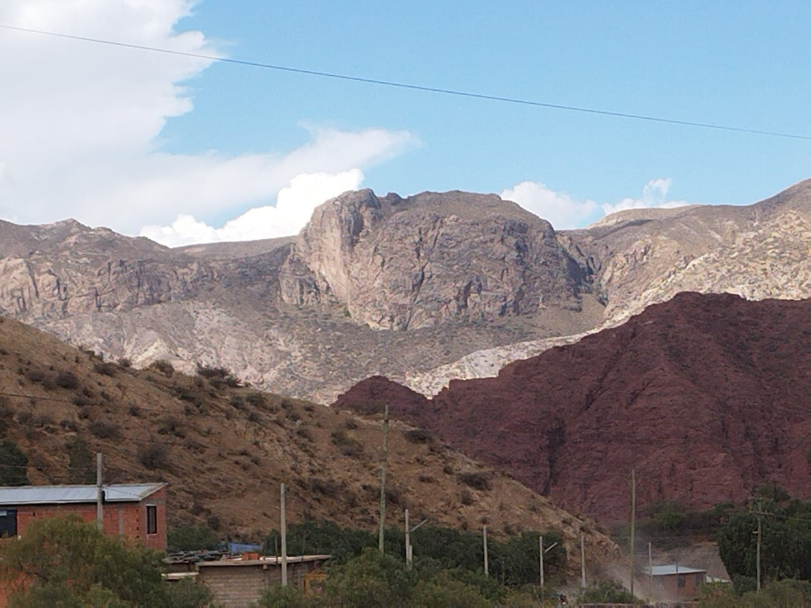

📜 Reseña Histórica
El Cerro Elefante debe su nombre a la silueta que adquiere vista desde ciertos ángulos, asemejando un paquidermo recostado contra el horizonte.
En la tradición local se menciona que en antiguos tiempos las formaciones rocosas eran veneradas como guardianes del valle. Además, el Cerro Elefante integra el circuito turístico de Tupiza junto con otros sitios naturales reconocidos.
🧭 Ubicación
El Cerro Elefante está localizado en el departamento de Potosí, cerca de Tupiza. Sus coordenadas aproximadas son *–21.4266°, –65.6926°*.
Se puede acceder mediante una senda empinada desde las áreas rurales de Tupiza. La subida implica ganar altura abruptamente, especialmente en los tramos cercanos a la cima, donde una pared vertical de roca arenisca desciende 200 a 300 metros hacia la quebrada.
🌄 Atractivos turísticos
✔️ Formación rocosa espectacular: su pared vertical y relieves erosionados llaman la atención por su imponencia.
✔️ Senderismo desafiante: la ruta hacia la “cabeza del elefante” implica tramos empinados y paisajes abruptos, ideal para quienes buscan aventura.
✔️ Hábitat de aves y cuevas: en sus acantilados y grietas se encuentran “casas de loros” y refugios naturales para aves locales.
✔️ Vista panorámica: desde la cima se obtienen vistas amplias del valle de Tupiza y de otros cerros cercanos.
✔️ Interpretación natural: ideal para estudiar la erosión, geología local, y observar flora típica del altiplano seco.
📷 Galería
